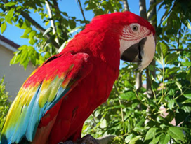
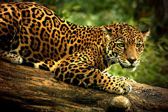
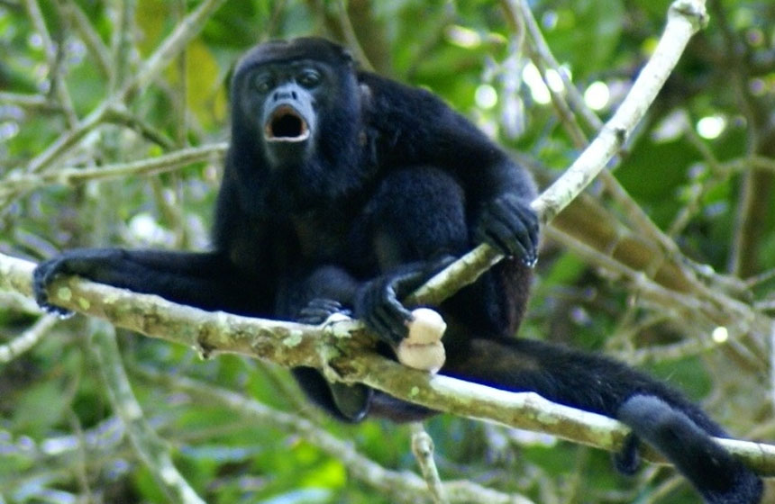
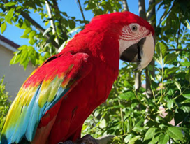
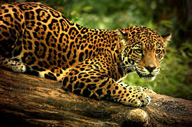
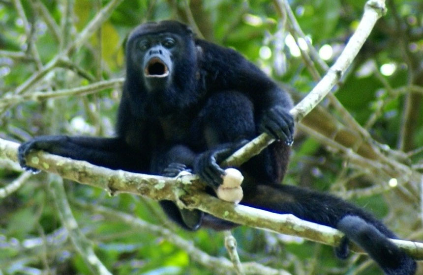
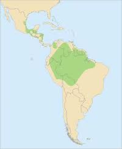

LAS GUACAMAYAS ROJA
Se distribuye en los estados de Tamaulipas, San Luis Potosí, Veracruz, Campeche, Oaxaca, Chiapas y en especial en Tabasco.Su hábitat es muy especial ya que solo habita en selvas tropicales de tierras bajas y sabana, aunque también en porciones remotas de bosque húmedo. Otro aspecto es que su hábitat tiene que estar cercano a ríos en todo su rango. Se alimenta de principalmente de semillas de arboles como el espabel, almendro, mangle, ginocuabe, ojoche, javillo y ceiba.
Lamentablemente esta en peligro de extinción esta bella ave por diferentes aspectos pero quizá el mas influyente es la deforestación, se estima que el 90% de las selvas se han perdido al igual que el hábitat de la guacamaya roja dando como resultado la inestabilidad de esta especie sin posible adaptación orillándola a la desaparición. También esta lo que es el tráfico ilegal, ya que es una de las aves mas bellas o quizás la mas bella esta muy cotizada en el mercado negro y las persona por su hermoso plumaje las adquieren como mascotas bloqueando su libertad al no estar en su hábitat natural.